Survivor Terminal
Shows current story, living world, active contracts, NPC bonds, city effects, and recommended actions in one screen.
ABADDON v17.4.1 preserves the complete RPG while consolidating story, world, contracts, expeditions, NPCs, production, and city progression.
Existing mount IDs, unlock scores and save data remain unchanged while sixteen localized cards, two catalogs, individual viewing and ride integration are added.

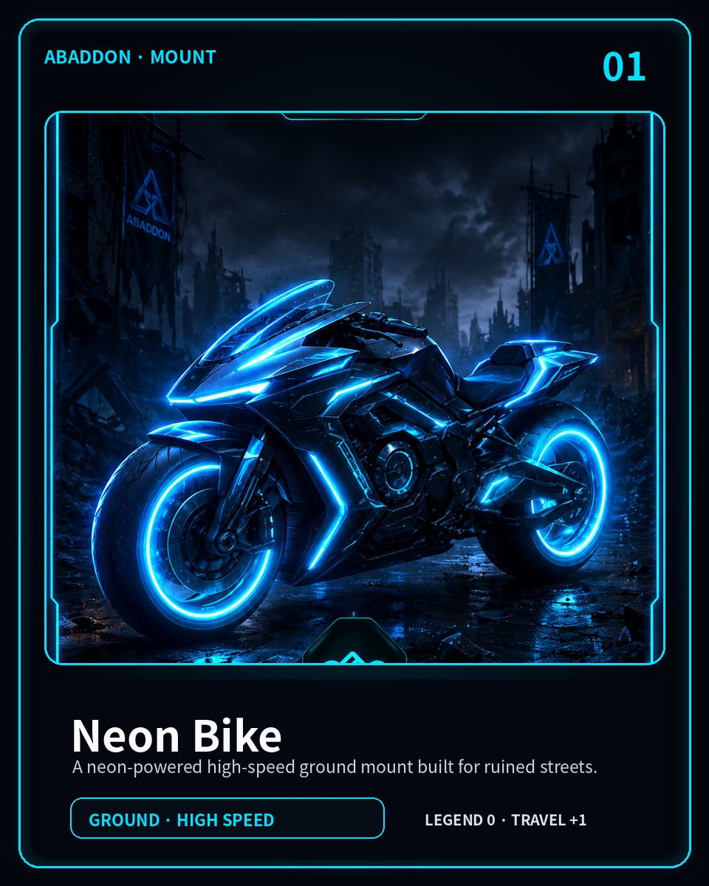
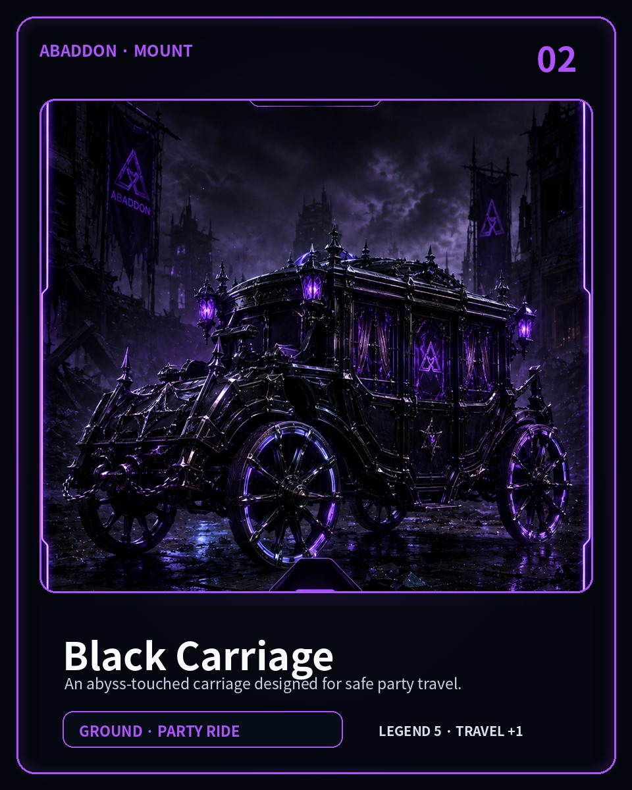
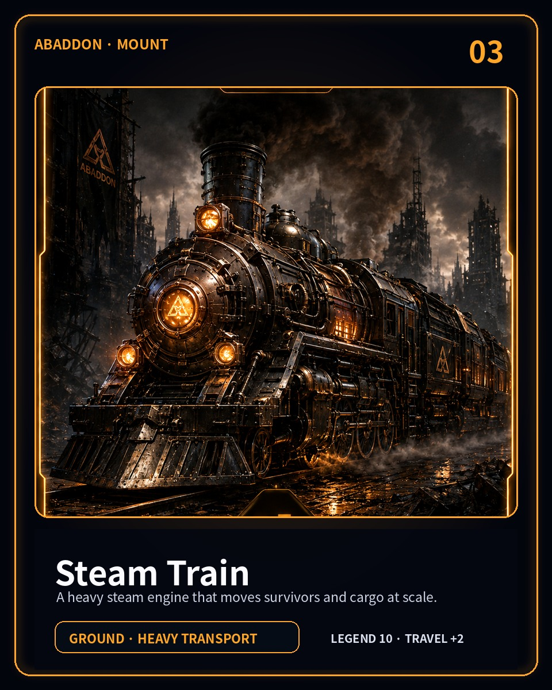
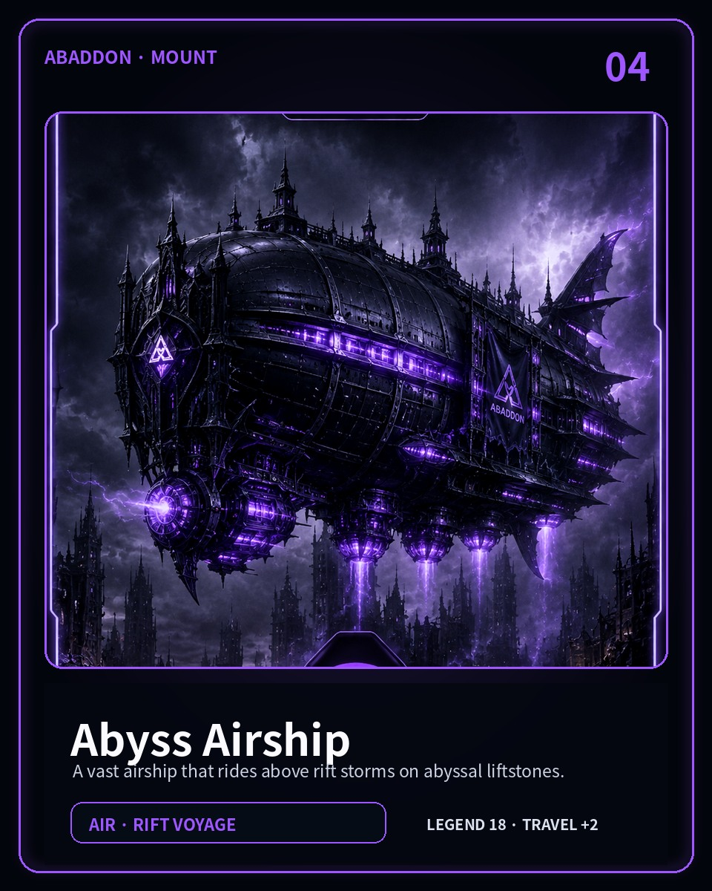
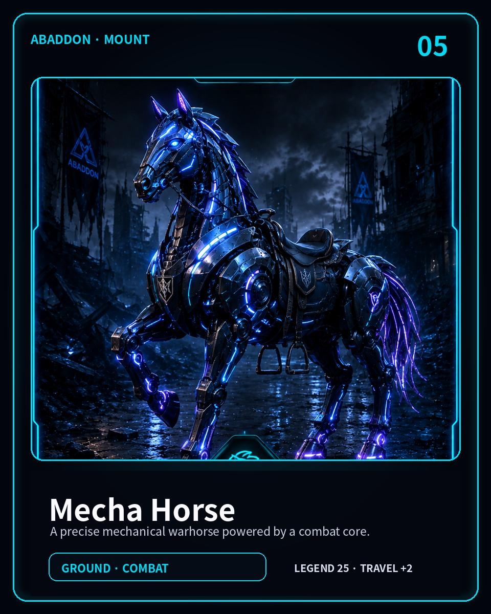
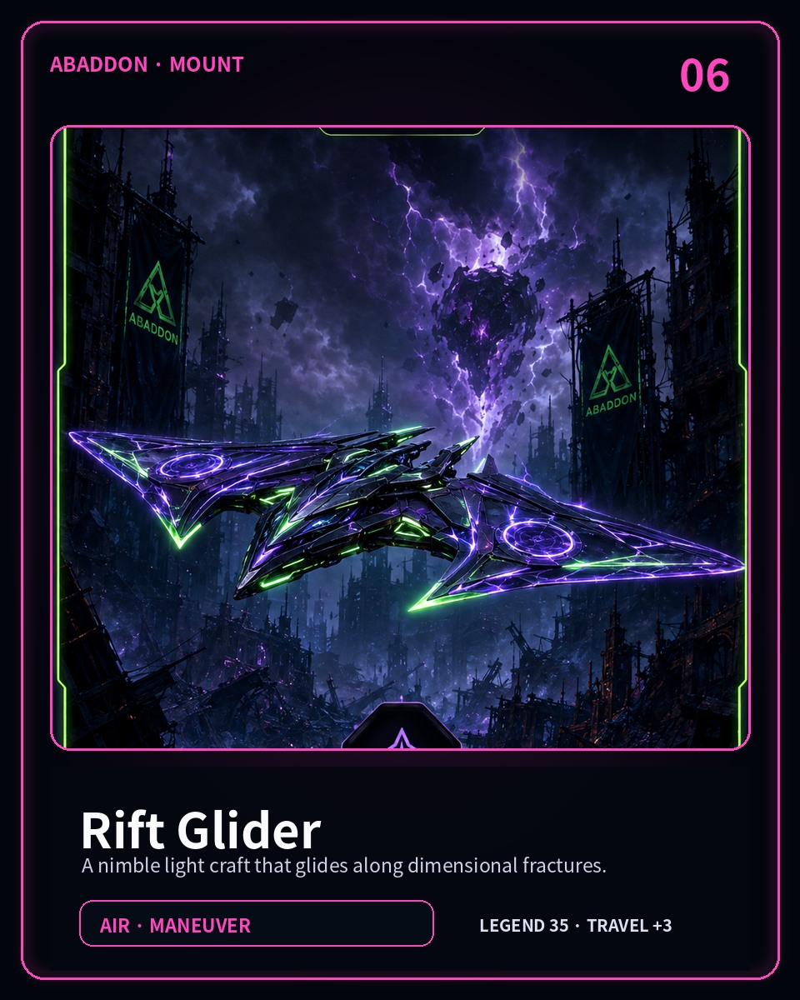
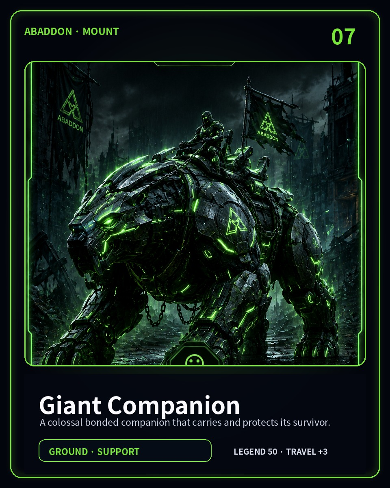

!mounts!mountview Neon Bike!ride Neon Bike!v1741mountaudit detail!v1740audit detail!mounts shows the catalog, !mountview opens an individual card, and !ride equips the selected mount with its live image.
Preserves every existing command while adding unified entry points and a world-driven contract loop that leads directly to the next useful action.
Shows current story, living world, active contracts, NPC bonds, city effects, and recommended actions in one screen.
Generates three daily and one weekly contract from the live world state, with progress, abandon, and history controls.
Alliance, Artificers, Black Market, Observatory, and Black Sun reputation affect NPC bonds and world metrics.
Connects gathering → inventory → crafting → material uses → city placement through one button flow.
Contract completion shows rewards, balance, EXP, reputation, NPC bond, and world metric changes together.
Seasons 1–6, expeditions, city, NPCs, casino, and gambling keep their original commands and are linked from the hubs.
!survivalterminal!contractoffice!contractaccept!contractprogress!contracthistory!productioncenter!factionreputation!v1740fusionaudit detail!v1740audit detailOnly the selected language is shown, and v17.4 adds fusion state without replacing existing saves.
Story → Living World → Solo Expedition → NPC Bonds → Materials/Crafting → City Workshop are now one guided loop.
See the current story, daily world event, highest-risk region, closest NPC, city effects, and next action in one screen.
Complete three of four activities—world event, solo expedition, NPC mission, and city workshop—to claim one daily reward.
Trust and Loyalty with the Scout, Medic, Engineer, Gunner, and Negotiator improve their matching expedition roles.
Black Sun decisions immediately affect Living World metrics and the NPC relationships of participating survivors.
See where Scrap, Herbs, Wood, Ore, Electronic Parts, Neon Crystals, and Rift Crystals are used.
Demon Market, Black Harbor, and Neon Train reduce world-market prices, while hope structures improve connected rewards.
!connectedhub!connectedobjectives!connectedreward!connectedhistory!materialuses!cityeffects!connectedsync!v1730linkaudit detail!v1730audit detailSeason 6 is now a real bilingual command group and the NPC bond category is audited from the runtime structure. Korean and English UI remain separate.
Combines the v17.0.1 Creator Forge group fix, v17.1 Living World, and v17.2 NPC bonds, romance, and betrayal.
!creatorforge is now a real command group with list, play, and unpublish subcommands.
KST time phases, weather, market index, faction conflict, Season 6 echoes, city metrics, and daily broadcasts change with thirty days of history.
Six regional risks rotate, and each survivor can act once per day to alter rewards and world metrics.
Canned food, medicine, and electronic part prices respond to daily weather and market conditions.
Schedules, locations, dialogue, gifts, Affinity, Trust, Loyalty, Fear, and history are unified.
Relationships change mission outcomes and betrayal risk, while qualified bonds unlock romance routes.
!livingworld!worldbulletin!regionrisk!worldevent!worldmarket!worldbroadcast!bonds!npclist!bondmission!confess!v1720audit detailOnly the selected language is shown, while Seasons 1–6, expeditions, city, casino, and Creator Forge data remain intact.
Real error logs drive a full button-runtime cleanup, a bilingual admin Creator Forge, and the five-chapter server story Return of the Black Sun.
Fixes _MissingSentinel.author, Webhook delete_after, growth None guards, and duplicate failure notices.
Admins enter separate Korean/English titles, 2–5 choices, outcomes, and capped rewards, then preview, test, and publish.
Published events are played with buttons and settle Food, EXP, HP, Infection, and materials once per user.
Five server-voted chapters change Hope, Order, Survival, and Abyss metrics toward five endings.
The command hub now links Seasons 1–6, Creator Forge, Community Events, and the v17 audit.
Includes a project UUID/hash proof file and an owner-only verification command hidden from normal users.
!creatorforge!creatorlibrary!communityevent!season6!season6start!season6vote!season6resolve!runtimecleansweep detail!v1700audit detailv17.0 is additive. Korean and English interfaces remain strictly separated by the selected locale.
Seven settings, four difficulties, five NPC roles, weekly mutations, and seed codes now connect Story, Gear, Gathering, City Workshop, and Personal Legend systems.
Travel through 6–9 stages of events, combat, scavenging, supply decisions, a boss, and return.
Reuses Seasons 1–5, BLACK CITY, and NEON ABYSS according to current progression.
Bring up to two scouts, medics, engineers, gunners, or negotiators for solo party tactics.
Weekly danger and rewards rotate, while seed codes reproduce expedition conditions.
Resume after restart; failure triggers rescue and partial recovery instead of permanent loss.
Collect events, enemies, NPCs, and endings while results show every reward and stat change.

!lonesurvivor!soloexpeditionstart!resumeexpedition!weeklymutation!expeditioncodex!expeditionseed!expeditiondifficulty!soloexpeditionrecords!v1680audit detailThe expedition connects existing systems without replacing them. Korean and English interfaces remain strictly separate.
Explicitly connects the three sanitizer helpers used by group and command selects while preserving the live registry and locale-separated interface.
Restores _safe_select_options and also guards the embed and view sanitizer imports.
Keeps all top sections, grouped selects, command selects, search, favorites and shortcut pages.
Korean stays Korean and English stays English-only.
!help!v1671audit detail!test detail!liveqacenter detailAdds a button-driven operations hub, confirmed cleanup, 24-hour live visibility, dead-link audits, and mobile UI checks.
Runs cleanup, errors, command health, server operations, alerts, onboarding, and patch notes from two button rows.
Cleans 10, 30, 50, or 100 messages, or filters bots, links, files, and one user only after confirmation.
Shows runs, failure rate, average and p95 latency, repeated failures, and slow commands since restart.
Checks commands, callbacks, descriptions, English access, shortcuts, and city-component assets.
Rechecks embed, select, button, and expired-interaction safety limits.
Korean stays Korean, while English users see English-only panels and buttons.
!liveopshub!cleanupcenter!liveusage detail!deadfeatureaudit detail!uipolishaudit detail!v1670audit detailExisting operation commands remain intact; this release only adds better entry points and audit layers.
Focused fixes for _MissingSentinel.author, 400 Invalid Form Body, and expired component interactions.
discord.py 2.7 MISSING Cog values are no longer treated as real Cogs, so legacy commands such as Equipment work from buttons.
Normalizes the 25-option cap, field lengths, duplicate values, and empty option lists before delivery.
Trims legacy results beyond 25 fields or the 6000-character total limit instead of failing delivery.
Command and equipment selects are acknowledged before editing to reduce NotFound failures.
!equipment!help!casino!interactionaudit detail!v1661audit detail!test detail!patchnotesThe feature structure is preserved; only runtime execution and Discord payload safety were reinforced.
A resumable first-survival journey, visible gains and changes, state-aware actions, live QA, settlement audits, and a clear glossary.
Registration → Season 1 → ruins → gear → base → daily tasks through buttons, with progress saved between sessions.
Compares actual saved state before and after commands to show rewards, costs, stats, and newly unlocked progress.
Recovery, gear, relief, story and activity buttons change with health, infection, debt and current content.
Combines command failures, component incidents, repeated errors and incident IDs from the existing operations ledger.
Checks casino, gambling, racing and relief for single debit, single settlement, restart refunds and negative-balance safety.
Explains Story, Dimensions, Factions, Crew, Fate, Casino, Gambling and City Workshop with direct commands.
!firstsurvival!beginnercenter!glossary!resultsummarysettings!recommendationsettings!liveqacenter detail!economysettlementaudit detail!v1660audit detailv16.6 adds guidance, visibility and runtime quality layers. Korean and English UI remain strictly separated.
Two shortcut pages, English-only command rendering, Story Compass, Survivor Hub, City Workshop 2.0, next-action buttons, and command health diagnostics.
Five top sections, grouped dropdowns, every command, direct execution, and two shortcut pages.
Korean stays Korean. English uses English aliases, descriptions, buttons, and dropdowns only.
See Seasons 1–5, the last choice, current objective, and a direct Continue button.
Survival status, economy, holdings, relief eligibility, and recommended actions in one panel.
Rotation, layers, remove-last, workshop history, and compatible city rendering.
Audit missing commands, categories, descriptions, English aliases, conflicts, and menu coverage.
!help!storycompass!survivorhub!cityworkshophistory!nextactionsettings!commandhealth detail!v1650audit detailThe command center explains all five sections, adds Casino/Gambling quick buttons, improves newcomer guidance and adds a negative-balance relief command.
Casino lobby, poker, blackjack, baccarat, slots, VIP and jackpot tools.
Horse racing, exploration bets, frequency bets, survival roulette and recovery tools.
Join panels explain the RPG and provide direct story, command, casino and gambling buttons.
Balances at -10,000 or below can receive up to 250,000 food once every 24 hours.
Gathering cards separate acquired items, stat changes and total attempts.
No legacy feature was removed. The main story is now the spine of the interface: section → group → command → execute.
Black Frequency, White Ark, Throne of the End, Twilight Terminal and Ashen Front are available in one ordered route.
Actual runtime commands are automatically classified into five sections and 43 groups with 25-item pages.
Read a short explanation, usage and aliases, then execute. Required arguments open a modal.
Existing IDs remain compatible while every part uses a new 512×512 transparent asset and placement history.
Wallet, games, economy, world map and command center are real buttons instead of copy-only text.
17 presets, 14 keyword rules and up to seven reactions per message while preserving server settings.
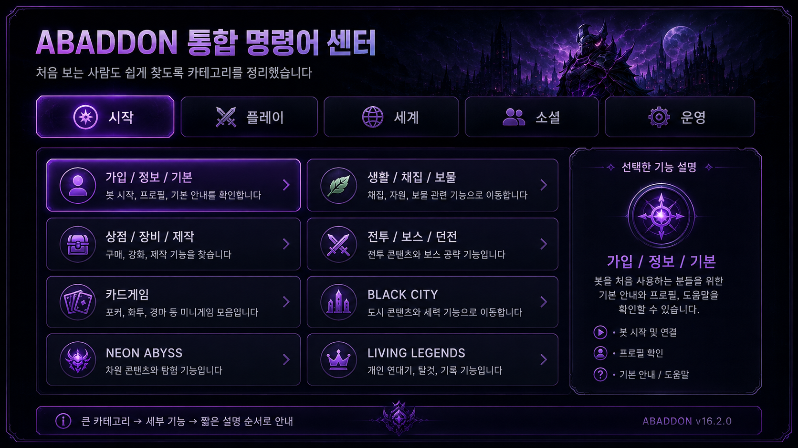
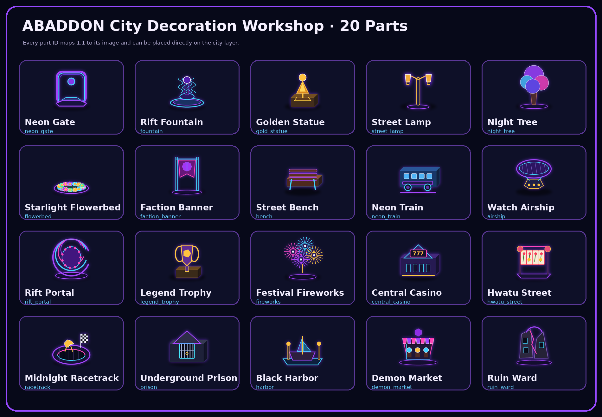
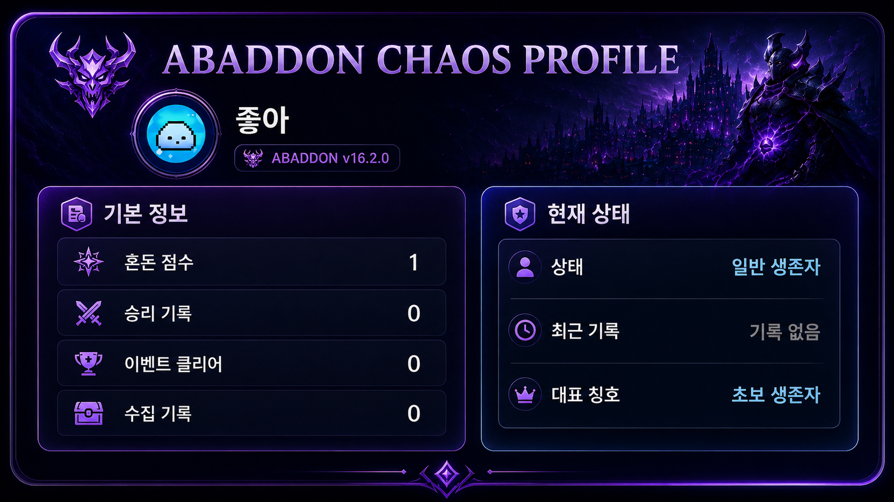
!help!fullcommandaudit detail!cityparts!citydecorate!citypartaudit detail!emojiupgrade!v1630audit detail!test detail!patchnotesZero legacy command removals, existing city part IDs preserved, save data preserved, and direct command input remains available.
Legacy commands and NEON ABYSS systems now share a button-based command center, unified gathering hub, personal chronicles, fate scenes, mounts, crew combos and convenience tools.
Five section buttons, paged category selects, featured/all toggles and direct routes keep every historical category reachable.
Field, city, dimension, crew and companion gathering share cooldown protection, bags, mastery and visual results.
Important actions become chronicle entries and a legend-card image combining fate alignment, signature mount and records.
Daily personal choices and opt-in admin city invasions, festivals and ending scenes use staged effects.
Unlock visual mounts from the Neon Bike to the Crew Flagship through legend progress.
Quick hub, progress dashboard, favorites, recent commands, legacy audits and synchronized Korean/English help.
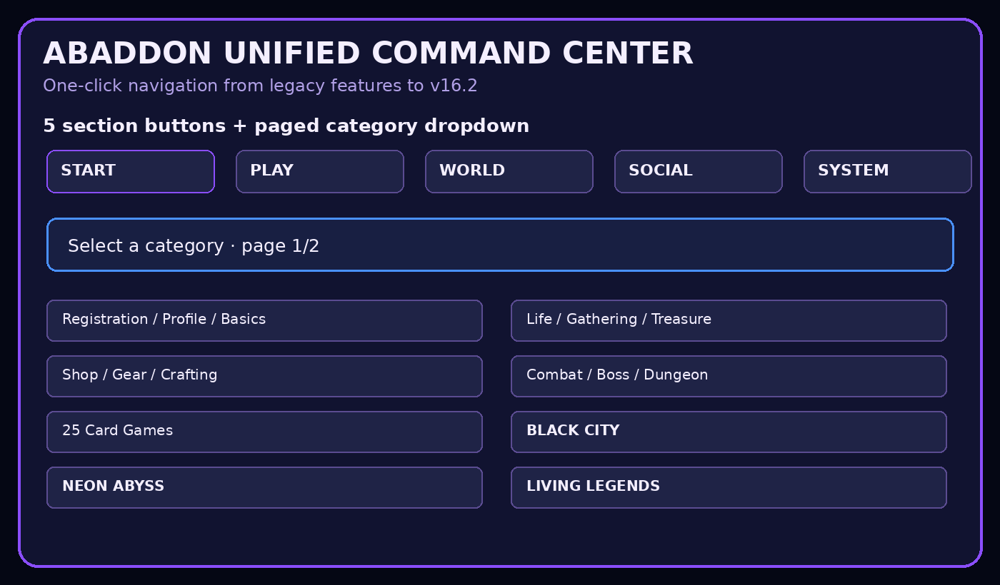


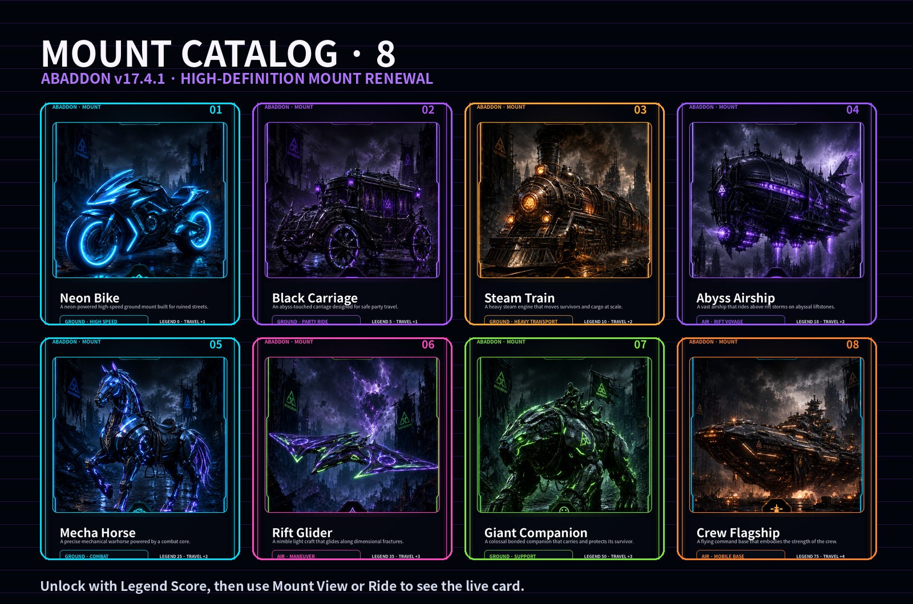
!help!gather!quickhub!myprogress!mylegend!todayscene!mounts!crewcombo!v1620audit detailAll affected Pillow renderers now share one Korean font resolver. If the host font is absent, the bot downloads and caches Noto Sans CJK before rendering.
The full history remains intact, but it no longer makes the first visit an endless scroll.
Connects dimension voyages, crews, raids, the opt-in federation network and the creator studio to BLACK CITY, with a Korean-safe layered map, 20 city parts, Unicode-only cinematic effects and contextual continuous chat.
Validates Korean fonts and composites nine districts, factions, city metrics and placed decorations into one PNG.
Place gates, fountains, statues, lamps, trains, airships, portals and fireworks through a selector and directional controls, with undo backups.
Gathering, crafting, bosses, exploration, construction and trades update through start, progress, resolution and completion frames using verified Unicode emoji.
Explore rotating dimensions, run choice campaigns, improve a shared ship, complete crew missions and build permanent lineage records.
Four boss phases, crew attacks and defense, critical hits, HP transitions and final reward outcomes are shown visually.
Follows the prior topic and short follow-ups for up to 60 minutes and 100 turns, with Korean and English kept separate per message.
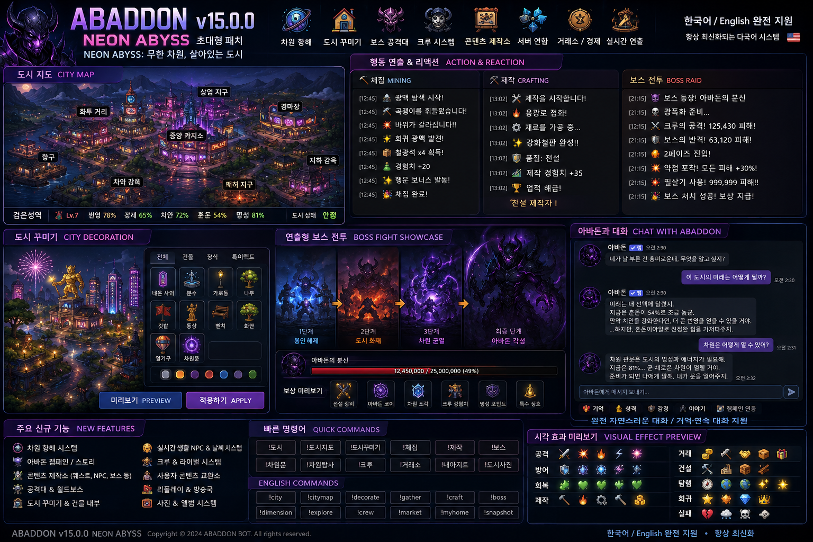
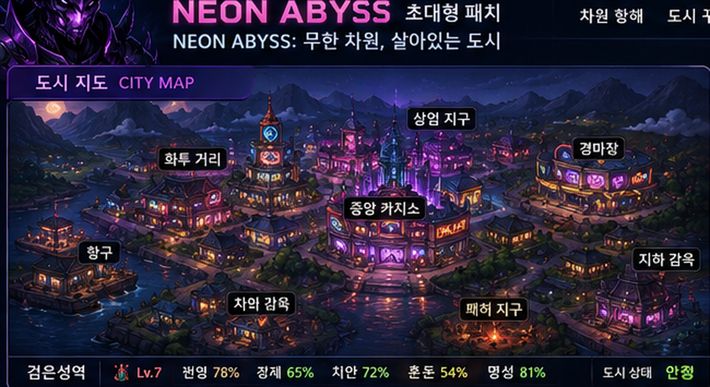
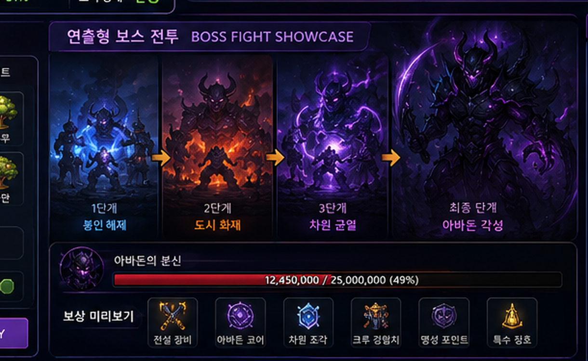
!citymap!citydecorate!cityparts!effectcatalog!dimensionexplore!dimensionbase!crew!federationnetwork!dimensionraid!riftbossattack!chatmode!v1500audit detailNine districts, factions, territory, production, escrow trade, hideouts, opt-in crime stories, living NPCs, four-week seasons and multiple endings share one recoverable world.
Prosperity, economy, security, chaos and fame change as members play across the city.
Create factions, attack or defend districts, and manage alliance, truce, neutral or hostile relations.
Use ten jobs, ten recipes and a transaction-ID marketplace with ledgers, cancellations and safe refunds.
Decorate personal spaces and build shared arenas, museums, vaults and world gates.
Opt-in crime missions, bounties, investigations, jail, trials, living NPCs and newspapers create guild history.
Development, faction conflict, disasters and the final gate lead to eight persistent endings.

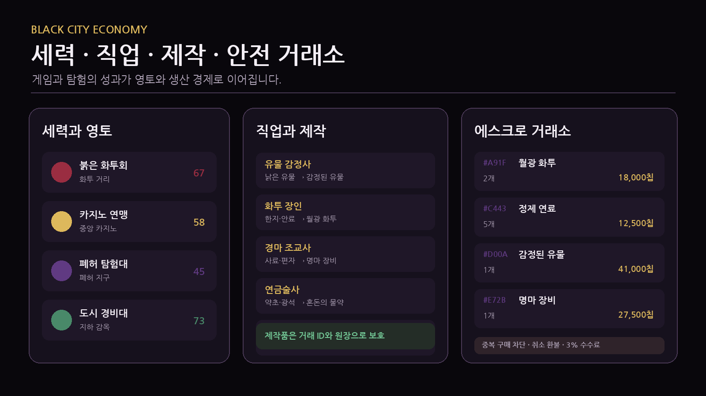
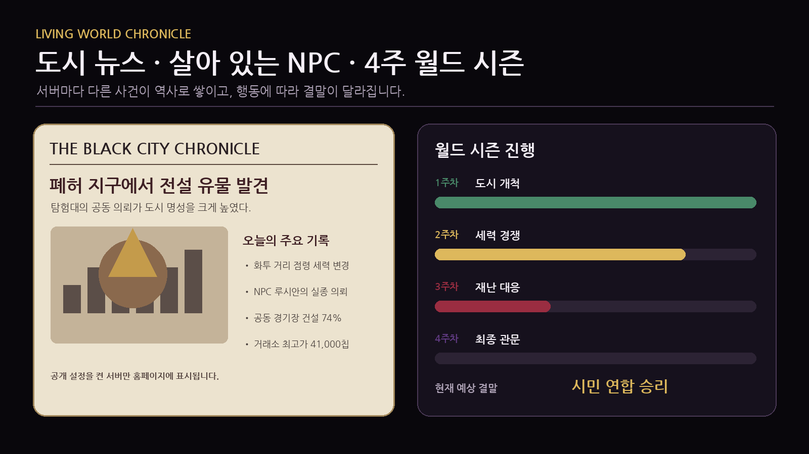
If Discord rejects a component emoji, ABADDON retries once with emoji-free components. Chaos-event buttons acknowledge the interaction before persistence work to reduce expired-interaction failures.
Random events, party games, NPC relationships, companions, expeditions, businesses, social games, cosmetics and secrets now share one restart-safe system.
Golden Goblin, treasure chests, meteors, ghosts, bank robbery, ABADDON Rampage, Lucky Hour and Cursed Hour use guild-local settings.
Play Hot Potato, Mafia, Liar Game, Shadow Quiz, Survival Roulette and the betrayal Mind Game with real joins and votes.
Talk, give gifts and build relationships, then raise eight companions through feeding, expeditions, evolution and races.
Resume solo or party runs across eight zones after a restart, and manage eight business types with staff, products and income.
Highlights, unlucky and comeback awards, fortune, compatibility, world cups, praise chains, secret friends and bingo include cooldowns and reports.
Unlock titles, backgrounds, card backs, table skins and trophy rooms while discovering hidden merchants, missions and a guild relic.
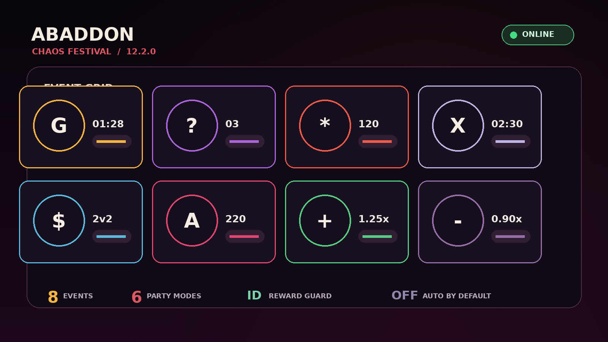
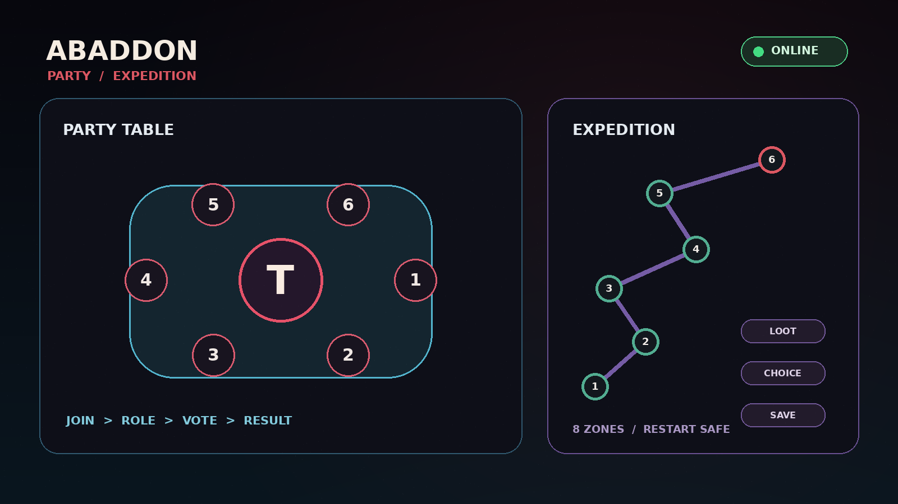
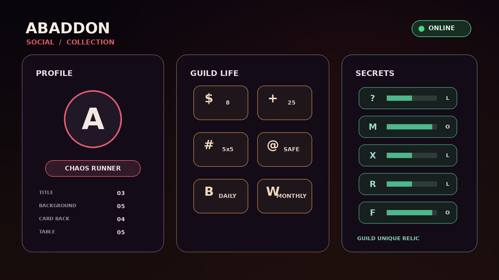
!chaosfestival!chaosevent!partygames!petcenter!expedition!mybusiness!cosmeticcenter!v1220audit detailOnly guild-created events send reminders. Broadcasts show public state only, while play history fills achievement collections.
Review today, this week and reserved games in an image calendar.
Guild-local events can notify one day, one hour and at start time.
Cards show pot, public board and turn; races show standings, odds and a shared finish line.
Winner, hand, net and balance before→after connect to the settlement ledger.
Collect hwatu months, poker hands, winning horses, dealers and decorations.
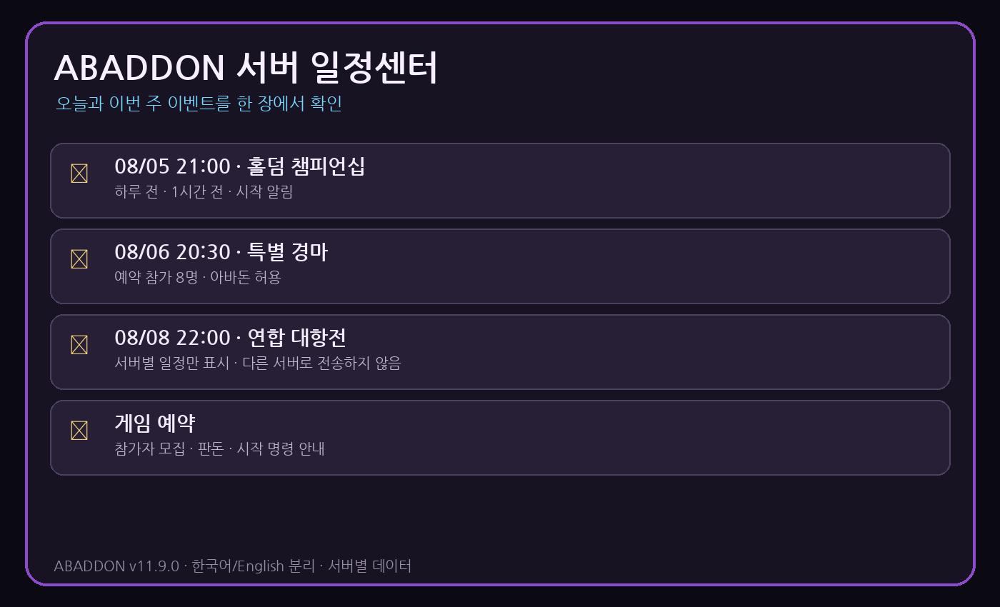
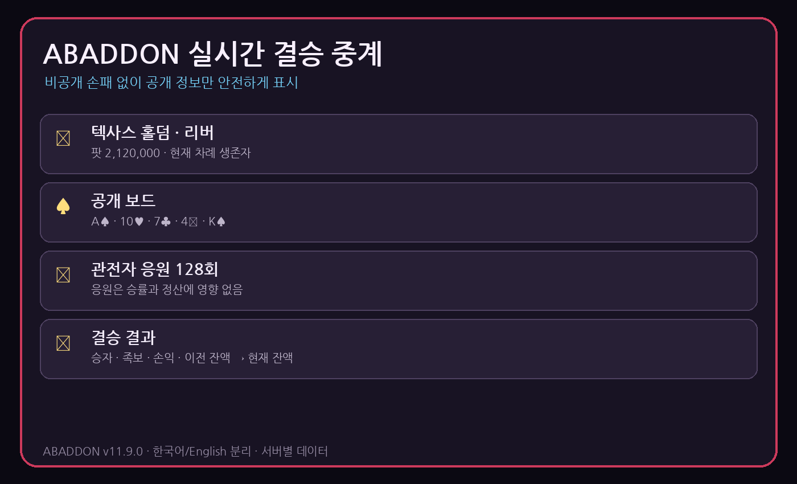
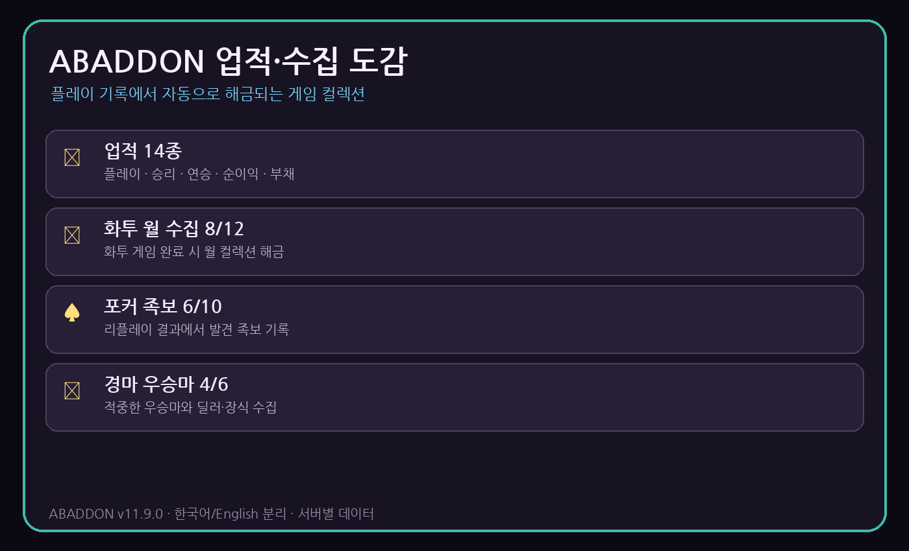
!schedule!reservegame!broadcast!finalbroadcast!achievementcenter!collectioncatalog!v1190audit detailAll 25 card modes save typed checkpoints every 15 seconds. Failed recovery refunds actual contributions including raises, once.
Preserves turn, hands, board, pot, bets and captured hwatu state.
Rebuilds the session and creates a fresh recovery message when the old one is unavailable.
Tracks the entry stake and every raise, then blocks duplicate refunds.
Choose auto-check, fold, ABADDON proxy, pause or full refund.
Checks 12×4 cards, unique images, month/type mapping and deck duplicates.
Bundles public actions, checkpoints and settlement IDs without storing private hands.
!recoverylist!recovergame [ID]!resumegame [ID]!afkrules!livegameaudit detail!patchnotesPoker remains unchanged. Only Matgo, Go-Stop, Minhwatu, Yukbaek, Seotda, Sambong and Dori Jitgo Ttaeng art was refreshed.
Each month maps its bright, animal, ribbon and two junk cards to exact image slots.
Public tables, private hands, captured cards, results and the catalogue use one deck.
Bright, animal and ribbon cards from months 1–10 now display the matching art.
Poker rules, images and settlement were not modified in this patch.
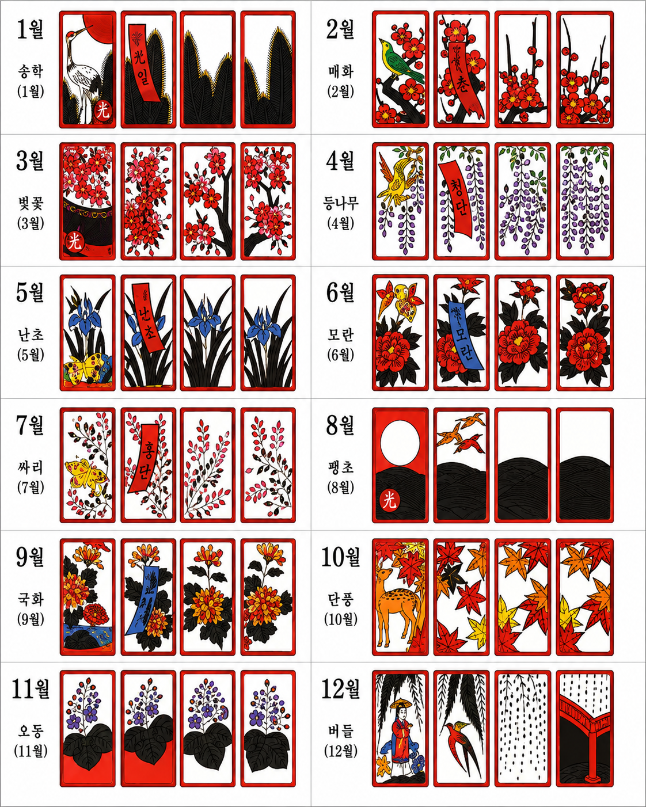
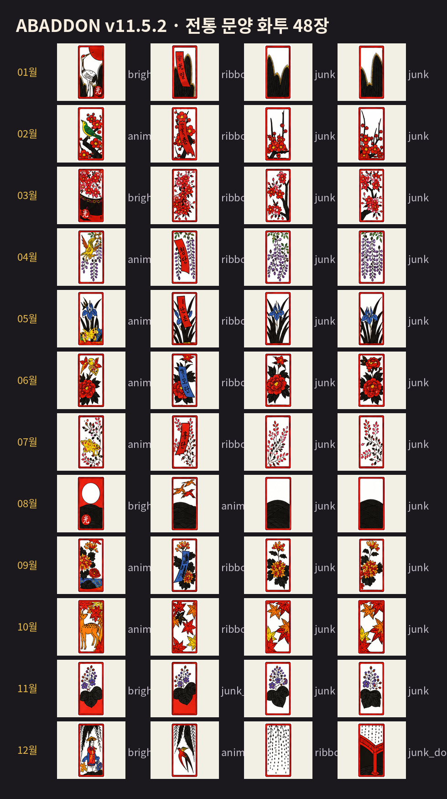
!hwatucatalog!viewhwatu!traditionalhwatuaudit detail!test detail!patchnotesChoose type, status, channel and mention role in one panel, then preview, test and apply.
Select disaster, patch, quiz, market, league, racing and other server alerts.
Choose on, off, always allowed, 09–23 or 08–22 presets.
Use Discord channel and role selectors, with @everyone blocked for safety.
Review pending settings and send a test message before saving.
Automatically back up before apply and select recent restore points from the UI.
!serveralerts!serveralertui!alerthours 09:00 23:00!alertuiaudit detail!test detailChoose alert channels and hours per server, audit every server bot, and back up, apply or restore channel permissions.
Manage disaster, patch, quiz, market and world-event alerts by type, channel and ON/OFF state.
Integrated automatic alerts pause outside the configured hours and resume automatically.
Review installed bots, powerful guild permissions and channel access in one place.
Preview profiles inferred from channel type and explicitly apply them to ABADDON or a selected bot.
Every permission change creates a restore point, with separate backups for server-operation settings.
!serveroperations!serveralerts disaster on #channel!alerthours 09:00 23:00!serverbotaudit detail!autopermissions preview!restorepermissions IDAutomatic alerts are off by default and post only to an admin-configured channel.
New and existing servers start with automatic disaster alerts disabled.
Only servers using !disasteralerts on receive automatic alerts.
!disasterchannel #channel chooses the only destination.
!removedisasteralerts clears the subscription, scheduler and channel.
!disasteralerts on!disasteralerts off!disasterchannel #channel!removedisasteralerts!disasteralertaudit detailSix horse odds reroll for each new race, then lock when you choose a horse and start.
Every new !horserace generates a different six-horse market.
The displayed odds stay fixed from your selection through the finish.
A winning ticket uses that race's selected odds and shows net change and current balance.
Horse markers, shared finish, photo finish, negative balance and uncapped stake remain.
!horserace 10000!racetrack!raceoddsaudit detail!test detail!patchnotesEach lane now shows a moving horse marker while every finish flag stays aligned.
A horse emoji appears beside each name and a moving ♞ appears in the lane.
All six lanes use the same length and finish-flag position.
Standings, photo finish, odds, debt and settlements are unchanged.

!horserace 10000!racetrackaudit detail!test detail!patchnotesIncludes game checkpoints, NPC dealers, alliance wars, personal casinos and a six-chapter card campaign.
45-second checkpoints and interrupted-session detection make recovery status easier to inspect.
Weekly rankings, season events, six NPC dealers and a champion table.
Combines game wins, net earnings, co-op boss damage and alliance XP.
Save a house dealer, name, decorations and visibility, then view an image card.
Advance through six chapters with choices, requirements and rewards.


!championship!alliancewar!mycasino!cardcampaign!v1140audit detailAuthentic card results always show the winner, game net, previous balance and current balance.
Winner, hand, pot, net and current balance.
Independent of wallet balance, with one server safety limit.
All six race lanes use the exact same finish coordinate.
Original ABADDON artwork is used in tables and the catalogue.


!gamecity!recentsettlement!shuffleverify!hwatucatalog!gamecityaudit detailActive games use a short GIF. Finished games stay as crisp PNGs.
Shows the turn, phase and latest public action.
If an image fails, the embed keeps the game and settlement running.
Public actions and the result appear in one timeline PNG.
See active card tables and horse races in one panel.


!liveboard!replayimage!spectate!polishaudit detail!test detailShorter copy, clearer tables, and private hand images.
The same message refreshes after each play, draw or bet.
Key card families send the owner's hand as an ephemeral PNG.
Font discovery, wrapping, shrinking and ellipsis reduce missing or clipped text.
Use !test detail and !imageaudit detail.


!cardgames!carddashboard!imageaudit detail!test detail!patchnotesThe race updates the same Discord message every few seconds, while final settlement shows payout, net and balance before→after.
!info and !survivordashboard attach a PNG with vitals, combat power, food, chips, pet and dungeon wins.
!worldmap shows six regions, unlocks, progress bars and boss clears in one connected map.
!carddashboard attaches the catalogue image and keeps the detailed selector and launch buttons.
!horserace 10000 runs six ABADDON jockeys with moving lanes and full settlement.


!info!worldmap!carddashboard!horserace 10000!inviteabaddon horse 10000!test detailThis focused hotfix adds per-mode information cards and removes the Render warning spam.
!carddashboard groups Poker, Korean cards/hwatu, casino and party modes, then shows rules and player counts for the selected game.
Create a public table or start an ABADDON match, enter the stake, and continue immediately.
The shared localizer no longer reads or writes deprecated TextInput.label, and new stake forms use discord.ui.Label.
!test detail checks only the catalogue, public/AI launch paths, locale separation and warning fix.
!carddashboard!cardcatalog!cardgames!test detail!patchnotesThe v10.7–v10.9 roadmap is delivered together: new live games, all-mode ABADDON AI, rooms, spectating, replays, dashboards, debt recovery, leagues, and latest-patch verification.
Every card-game ending shows outcome, public hand or score, pot, game net, and balance before and after settlement. If the original message cannot be edited, a new final-result card is sent.
Hoola, Rummy, President, Dice Card Poker, Sambong, Dori Jitgo Ttaeng, Minhwatu, Yukbaek 600, and a five-hand Blackjack Tournament.
Every card table can add ABADDON. Three-player modes automatically fill an ABADDON-β seat. Choose among four difficulties and five personalities.
Browse recruiting and active tables, spectate public information, review recent game logs, quick-join, and create rematches.
Survivor, game, economy/debt, world, map, companion, alliance, season, league, audit, and patch-note views use polished Discord embed cards.
!test detail checks only features added or changed in v10.9.0. The checklist is replaced whenever a new patch is released.
!cardgames!inviteabaddon hoola 10000!cardroom!infopanel!test detail!patchnotesPlay each game through Discord buttons, private hands, selectors and staged betting.
Play a hand card, choose a matching floor card, flip the stock and resolve ppuk, jjok, ttadak, sweep, bomb, shake and Go/Stop.
Choose check, call, raise, fold and draws across pre-flop, flop, turn, river, stud streets and draw rounds.
Bet after the first card and again after the second, then reveal bright pairs, pairs, specials, points and Gusa redeals.
Low balances do not block the table. Negative wallets, no-limit raises and uncapped hwatu settlement remain connected to bankruptcy.
!cardgames!seotda 10000!cardrules!gameplayauditProgress, balances, cooldowns, claims, and server state remain shared. Only presentation changes with the selected locale.
English users receive English-only interface text. Korean users receive Korean-only interface text.
Korean commands stay available while every prefix command receives collision-safe English access.
Active cases, faction missions, world operations, squad activity, and unclaimed rewards appear in one panel.
Review regions, factions, encounters, items, characters, trophies, and discovered records.
Major survivor characters remember rescue, support, and cooperative operation records.
Choose a role, perform field actions, fill a shared objective, settle safely, and claim once.
Find safely detectable unclaimed rewards across expeditions and existing co-op systems.
Route emojis move while percentage bars fill during scavenging, scouting, convoys, raids, and squad operations.
!language english!tasks!survivalcodex!relationships!expeditionoperation!v1000auditCharacters, jobs, specializations, equipment, crafting, dungeons, raids, and world bosses.
Scavenging, varied encounters, world map, regional development, outposts, and regional bosses.
Parties, squads, guilds, NPC factions, reputation, convoys, restoration, and faction wars.
Disasters, weather, world cycles, directives, stability, supply, morale, and contamination.
Cases, clues, bounties, personal shelters, trophies, and cooperative investigation raids.
Sequential seasons, shared choices, chronicles, endings, and persistent world consequences.
Legacy checks remain, with v17.0 runtime cleanup, Creator Forge, and Season 6 verification added.
!info
!help
!runtimecleansweep detail
!v1700audit detail
!test detail
!patchnotes
!creatorforge
!creatorlibrary
!communityevent
!season6
!season6start
!season6vote 1
!season6resolve
!season6history
!season6reward
!storycompass
!lonesurvivor
!casino
!gamblinginfo
!citydecorate
!liveqacenter detail!creatorforge!communityevent!season6!runtimecleansweep detail!v1700audit detail!fullcommandaudit detail!commandhealth detail!imageaudit detail!citypartaudit detail!economysettlementaudit detail